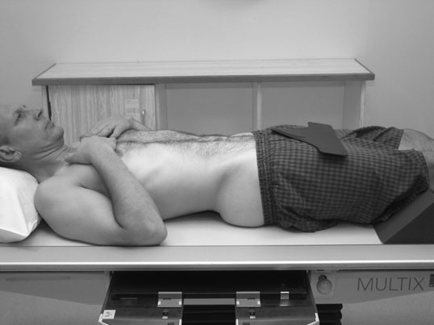

Abdomen(Supine)
Centering point:Directed to the midsaggital plane at the level of the iliac crests
Perpendicular to the IR
Cassette Size:35cm x 43cm (14 x 17 ins)
Potrait
Exposure Factors:75kVp on
35MaS
FFD:100cm
Bucky/Grid:Moving or Stationary Grid
Filter:No
Collimation:Centre: To the midsaggital plane at the level of the iliac crests
Shutter A: Open to include the pubic symphysis inferiorly
Shutter B: Open to include the lateral skin margins
Pathologies:Bowel obstruction, inflammatory bowel disease, volvulus, organomegaly, pneumoperitoneum, tumour and ascities
Position of patient and cassette
- Suspended on expiration - this lifts the diaphragm and presents the abdominal contents in a more relaxed state. (check your departmental technique protocol)
- Patient is supine on the table
- Cushion for head
- Patient's arms slightly abducted from the torso
- Positioned without rotation of the pelvis and torso
- Ensure there are no artefacts such as zips or buttons over the area being imaged
- Centre the midsaggital plane of the patient to the midline of the IR
- CR directed to the midsaggital plane at the level of the iliac crests
Critique:
- Positioning
- No rotation is evidenced by:
- symmetrical iliac wings
- the obturator foramina are both open and symmetrical
- the sacrum is centred in the pelvic inlet
-
the pedicles of the vertebrae are the same distance from the spinous processes on each side
-
Area Covered
The diaphragm to pubic symphysis
-
Collimation
- Centre: L4 Lumbar vertebra, which is at the level of the iliac crests
- Shutter A: Open to include the pubic symphysis inferiorly and diaphragm superiorly
-
Shutter B: Open to include the lateral skin margins if possible
-
Exposure
-
There should be adequate exposure and no patient motion so that the following anatomy is demonstrated
- the outline of the psoas muscles
- the outline of the kidneys
-
skeletal structures such as the posterior ribs, vertebrae and pelvic anatomy